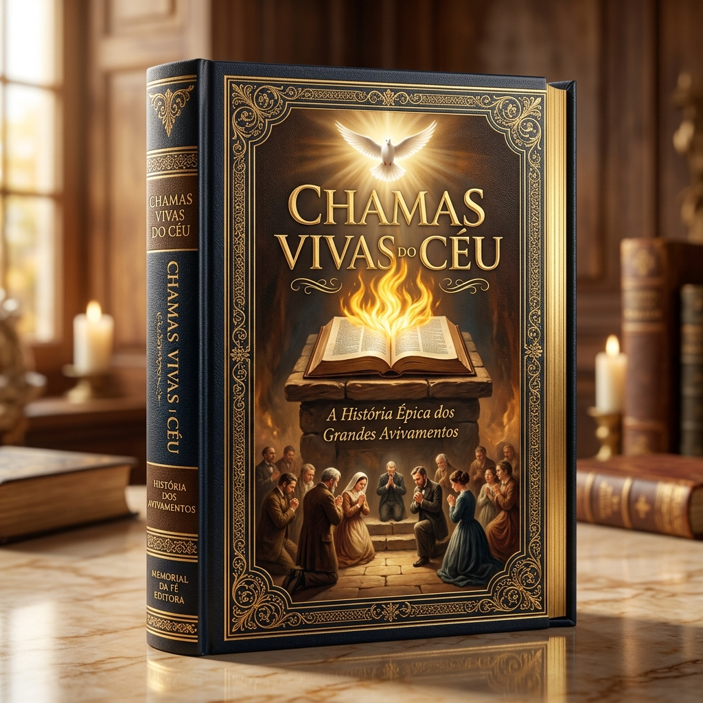

Das primeiras três mil almas quebrantadas no Cenáculo de Jerusalém às vigílias que fecharam tavernas, esvaziaram tribunais e incendiaram continentes inteiros: uma crônica histórica e espiritual sobre o que acontece quando o Espírito Santo desce sobre joelhos dobrados.
Ao longo de dois milênios, houve épocas em que a fé cristã pareceu prestes a extinguir-se sob o peso da frieza espiritual, da corrupção moral, das perseguições sangrentas ou do racionalismo arrogante. Filósofos chegaram a datar o funeral da Bíblia; tiranos ergueram monumentos celebrando a suposta extinção dos crentes. Contudo, todas as vezes em que a noite pareceu mais densa, um som vindo do Céu — como o de um vento veemente e impetuoso — voltou a soprar sobre um remanescente humilde que chorava de joelhos.
Avivamento não é histeria emocional nem espetáculo fabricado por homens. Na definição clássica dos antigos homens de Deus, avivamento é uma comunidade saturada da presença do próprio Deus. É quando a santidade do Espírito Santo se torna tão palpável em uma cidade que os pecadores caem de joelhos nas ruas antes mesmo de ouvirem um sermão; é quando dívidas antigas são pagas, famílias destruídas se abraçam em perdão e os cânticos do Céu substituem as blasfêmias da terra.
Neste livro, percorreremos em ordem cronológica e riqueza documental os dez grandes marcos desse fogo sagrado — desde a manhã de Pentecostes em Atos dos Apóstolos até o clamor que ecoa nos nossos dias.
Para compreendermos a dimensão do que ocorreu na manhã de Pentecostes, precisamos primeiro contemplar quem eram aquelas cento e vinte pessoas reunidas no Cenáculo de Jerusalém. Apenas sete semanas antes, aquele mesmo grupo estava destroçado pelo medo. Pedro, o mais impulsivo dos discípulos, havia negado conhecer o Mestre três vezes diante de uma criada aquecendo-se ao fogo; os demais haviam fugido na escuridão do Getsêmani; as portas estavam trancadas por pavor das autoridades que haviam crucificado o Nazareno.
Porém, o Cristo Ressurreto aparecera entre eles durante quarenta dias com provas infalíveis e, antes de ascender às nuvens no Monte das Oliveiras, deixara uma ordem expressa: "Não vos ausenteis de Jerusalém, mas esperai a promessa do Pai... recebereis a virtude do Espírito Santo, que há de vir sobre vós; e ser-me-eis testemunhas tanto em Jerusalém como em toda a Judeia e Samaria e até aos confins da terra" (Atos 1:4,8).
Durante dez dias inteiros, enquanto a cidade fervilhava de peregrinos vindos de todas as províncias do Império Romano para celebrar a Festa das Semanas (Shavuot), aqueles cento e vinte homens e mulheres — incluindo Maria, mãe de Jesus, os irmãos do Senhor e os apóstolos — não organizaram comitês políticos nem traçaram estratégias humanas. O texto sagrado registra o segredo de todo avivamento genuíno: "Todos estes perseveravam unanimemente em oração e súplicas" (Atos 1:14). Antes que houvesse fogo sobre as cabeças, houve unanimidade, arrependimento e perseverança nos joelhos.
Quando o quinquagésimo dia amanheceu em Jerusalém — por volta da hora terceira da manhã (nove horas no nosso relógio), exatamente no instante em que os sacerdotes ofereciam o sacrifício matutino no Templo —, o Céu rasgou o silêncio da terra. Lucas descreve a cena com precisão sensorial impressionante:
"E, cumprindo-se o dia de Pentecostes, estavam todos reunidos no mesmo lugar; e, de repente, veio do céu um som, como de um vento veemente e impetuoso, e encheu toda a casa em que estavam assentados. E foram vistas por eles línguas repartidas, como que de fogo, as quais pousaram sobre cada um deles. E todos foram cheios do Espírito Santo e começaram a falar em outras línguas, conforme o Espírito Santo lhes concedia que falassem." — Atos 2:1-4
Repare na riqueza de cada detalhe: na Antiga Aliança, no Monte Sinai, o fogo de Deus descera sobre a pedra para gravar a Lei (onde morreram três mil homens por causa da idolatria do bezerro de ouro, conforme Êxodo 32:28). Agora, na Nova Aliança, o fogo não caía mais sobre tábuas de pedra nem ficava restrito atrás do véu de um santuário inacessível: a chama viva dividia-se e pousava individualmente sobre a cabeça de pescadores simples, mulheres piedosas e jovens discípulos, transformando cada crente em um templo vivo do Espírito Santo!
O estrondo espiritual foi tão intenso que uma multidão imensa correu para as imediações do Cenáculo e dos pórticos do Templo. Eram judeus devotos e prosélitos vindos de quinze regiões distintas do mundo antigo: partos, medos, elamitas, moradores da Mesopotâmia, Capadócia, Ponto, Ásia, Frígia, Panfília, Egito, Líbia, Cirene, Roma, cretenses e árabes. Em Babel (Gênesis 11), o orgulho humano havia confundido as línguas para dispersar os povos; em Pentecostes, a humildade da cruz fazia com que cada estrangeiro ouvisse em seu próprio idioma materno "as grandezas de Deus"!
Foi naquele exato momento que Simão Pedro — o mesmo homem que semanas antes tremera diante de uma jovem porteira — pôs-se em pé com os onze e ergueu a voz diante de milhares de pessoas. Não era um discurso lido em pergaminho nem uma peça de retórica grega. Era a Palavra de Deus ungida pelo Fogo. Pedro abriu o livro do profeta Joel ("Nos últimos dias derramarei do meu Espírito sobre toda a carne"), percorreu os Salmos de Davi e apontou sem temor para a consciência daquela multidão: "Saiba, pois, com certeza, toda a casa de Israel que a este Jesus, a quem vós crucificastes, Deus o fez Senhor e Cristo!" (Atos 2:36).
O efeito daquela primeira pregação revestida do Espírito Santo é o modelo eterno de toda obra de avivamento: não houve aplausos para o pregador; houve uma flecha de convicção profunda no peito dos ouvintes. O texto bíblico diz que eles "compungiram-se em seu coração" (no grego original, katanysso: ser traspassado ou ferido profundamente na alma) e clamaram a Pedro e aos demais apóstolos:
"Que faremos, varões irmãos? E disse-lhes Pedro: Arrependei-vos, e cada um de vós seja batizado em nome de Jesus Cristo para perdão dos pecados, e recebereis o dom do Espírito Santo... De sorte que foram batizados os que de bom grado receberam a sua palavra; e, naquele dia, agregaram-se quase três mil almas!" — Atos 2:37-38, 41
Imagine a cena histórica na Jerusalém do primeiro século: quase três mil pessoas chorando seus pecados sob o sol do meio-dia, descendo aos tanques rituais (mikva'ot) ao redor do Monte do Templo e do Tanque de Siloé para serem batizadas em nome de Jesus Cristo! E o avivamento não terminou na água do batismo: ele gerou uma revolução de amor prático. Aqueles três mil novos convertidos perseveravam na doutrina dos apóstolos, na comunhão, no partir do pão e nas orações; vendiam suas propriedades para que nenhum necessitado passasse fome, louvando a Deus com alegria e singeleza de coração, enquanto "todos os dias acrescentava o Senhor à igreja aqueles que se haviam de salvar".
A chama acesa em Pentecostes não ficou trancada entre quatro paredes. Poucos dias depois, Pedro e João subiam ao Templo na hora nona (três da tarde), a hora da oração. Junto à majestosa Porta Formosa — revestida de bronze coríntio reluzente — jazia um homem coxo desde o ventre de sua mãe, com mais de quarenta anos de idade, pedindo esmolas. A igreja primitiva ainda não possuía catedrais de mármore nem cofres cheios de ouro, mas possuía a autoridade viva do Nome de Jesus.
Olhando-o nos olhos, Pedro proferiu as palavras que ecoariam pelos séculos: "Não tenho prata nem ouro, mas o que tenho, isso te dou: em nome de Jesus Cristo, o Nazareno, levanta-te e anda!" (Atos 3:6). Os pés e artelhos daquele homem firmaram-se instantaneamente; ele entrou no Templo andando, saltando e louvando a Deus diante de todo o povo atônito. Quando a multidão correu para o Alpendre de Salomão, Pedro pregou novamente o arrependimento para que "venham, da presença do Senhor, tempos de refrigério" (Atos 3:19). Mesmo com os sacerdotes e saduceus prendendo os apóstolos ao cair da tarde, a semente já havia germinado: "Muitos, porém, dos que ouviram a palavra creram, e chegou o número desses homens a quase cinco mil" (Atos 4:4) — sem contar mulheres e crianças, o que elevava a comunidade de Jerusalém para mais de dez a quinze mil almas em poucas semanas!
Diante das ameaças do Sinédrio para que nunca mais falassem no nome de Jesus, qual foi a reação da Igreja? Eles não pediram a Deus que os escondesse nem que aliviasse a perseguição. Reunidos em oração (Atos 4:24-31), clamaram: "Agora, pois, ó Senhor, olha para as suas ameaças e concede aos teus servos que falem com toda a ousadia a tua palavra, enquanto estendes a tua mão para curar!"
"E, tendo orado, moveu-se o lugar em que estavam reunidos; e todos foram cheios do Espírito Santo e anunciavam com ousadia a palavra de Deus." — Atos 4:31
Quando a perseguição após o martírio de Estêvão espalhou os crentes pela Judeia e Samaria (Atos 8), o inimigo pensou que estava apagando o incêndio, mas estava apenas espalhando as brasas! Filipe desceu a Samaria e uma cidade inteira foi tomada de grande alegria com curas, libertações e batismos. Mais tarde, em Éfeso (Atos 19) — capital da idolatria a Diana e centro de artes mágicas do mundo antigo —, o avivamento através do ministério de Paulo foi tão profundo que o temor de Deus caiu sobre todos os habitantes: os próprios praticantes de feitiçaria trouxeram seus pergaminhos secretos e os queimaram em praça pública, num valor equivalente a cinquenta mil peças de prata (o salário de cinquenta mil dias de trabalho!). Como resume Lucas: "Assim a palavra do Senhor crescia poderosamente e prevalecia" (Atos 19:20).
Como um movimento liderado por carpinteiros, pescadores e escravos, sem exércitos, sem poder político e caçado implacavelmente durante dez ondas de perseguição imperial, conseguiu converter o maior império militar da Antiguidade? A resposta está no avivamento silencioso das catacumbas e das arenas.
Em 155 d.C., quando o idoso bispo Policarpo de Esmirna (discípulo direto do apóstolo João) foi levado à arena diante do procônsul romano que exigia que ele amaldiçoasse a Cristo para salvar a própria vida, o ancião respondeu com serenidade inabalável: "Oitenta e seis anos eu O sirvo, e Ele nunca me fez mal algum. Como posso blasfemar contra o meu Rei que me salvou?". Em Cartago (203 d.C.), a jovem nobre Perpétua e a escrava grávida Felicidade entraram na arena de mãos dadas, cantando salmos e abraçando-se com o ósculo santo antes de entregarem a vida.
Os espectadores romanos, acostumados a ver gladiadores morrerem amaldiçoando seus algozes, voltavam das arenas profundamente abalados. Carcereiros como Pudente converteram-se ao ver a paz luminosa dos prisioneiros; centuriões lançavam suas armas aos pés dos mártires pedindo para serem batizados no mesmo Deus. Além disso, quando as grandes epidemias (a Peste Antonina e a Peste de Cipriano no século terceiro) devastaram as cidades romanas e os pagãos abandonavam até os próprios parentes nas ruas por medo do contágio, os cristãos saíam das catacumbas para alimentar, limpar e cuidar dos doentes pagãos ao custo da própria vida.
Foi diante desse espetáculo de amor sobrenatural que o apologista Tertuliano cunhou a frase imortal dirigida aos governadores de Roma:
"Podeis matar-nos, torturar-nos, condenar-nos; a vossa injustiça é a prova da nossa inocência... Quanto mais nos ceifais, mais numerosos nos tornamos: o sangue dos cristãos é semente!" — Tertuliano (Apologeticum, 197 d.C.)
Quando Martinho Lutero redescobriu nas páginas de Romanos 1:17 que "o justo viverá pela fé" e traduziu a Bíblia inteira para a língua do povo em 1522, um terremoto espiritual sacudiu a Europa. Pela primeira vez em séculos, camponeses, mães de família e artesãos podiam ler diretamente as palavras de Jesus e cantar hinos congregacionais em seu próprio idioma. Contudo, um século e meio após a Reforma, muitas igrejas europeias haviam caído na armadilha da ortodoxia fria: tinham a doutrina correta no papel, mas faltava-lhes o calor das lágrimas e do Espírito no coração.
Em 1722, um pequeno grupo de cristãos perseguidos da Morávia e da Boêmia (herdeiros espirituais do mártir Jan Hus) pediu abrigo nas terras do jovem nobre piedoso Conde Nicolau von Zinzendorf, na Saxônia. Ali fundaram a aldeia de Herrnhut ("A Guarda do Senhor"). Com o tempo, porém, cerca de trezentos refugiados de diferentes tradições começaram a discutir amargamente sobre pontos secundários de doutrina, dividindo a comunidade.
Com o coração partido, Zinzendorf, então com apenas vinte e sete anos, visitou casa por casa lendo a Primeira Epístola de João, chorando com as famílias e convocando-as ao arrependimento mútuo. Na manhã de quarta-feira, 13 de agosto de 1727, durante um culto de Santa Ceia na igreja paroquial de Berthelsdorf, o Céu desceu sobre aquela pequena comunidade exatamente como em Atos 2. Ninguém queria sair do templo; inimigos abraçavam-se em pranto pedindo perdão; crianças de oito a doze anos oravam nos bosques com tal quebrantamento que os adultos ficavam maravilhados.
Duas semanas após aquele derramamento, vinte e quatro homens e vinte e quatro mulheres estabeleceram um relógio vivo de intercessão inspirado em Levítico 6:13 ("O fogo arderá continuamente sobre o altar; não se apagará"), dividindo-se em turnos de uma hora, dia e noite. Aquela reunião de oração 24 horas por dia durou mais de cem anos ininterruptos (1727 a 1827)! Daquela pequena aldeia de trezentos moradores saíram mais de trezentos missionários para a Groenlândia, Caribe, África e Américas — jovens que chegavam a vender-se como escravos para poder pregar aos cativos nas ilhas do açúcar, bradando enquanto o navio partia: "Que o Cordeiro que foi imolado receba a recompensa do Seu sofrimento!"
Na primeira metade do século dezoito, a Inglaterra encontrava-se em um abismo moral: o alcoolismo epidêmico pelo gim barato destruía famílias, o tráfico de escravos enriquecia os portos, os pobres trabalhavam como animais nas minas de carvão e grande parte do clero tratava a fé como mera formalidade social. Foi justamente através do testemunho dos irmãos morávios que o pastor anglicano John Wesley sentiu seu coração "estranhamente aquecido" na Rua Aldersgate, em Londres, na noite de 24 de maio de 1738.
Pouco depois, em fevereiro de 1739, seu jovem amigo de faculdade, George Whitefield — então com apenas vinte e quatro anos —, vendo que as portas das igrejas formais estavam fechadas para a mensagem do novo nascimento, tomou uma decisão escandalosa para a época: subiu em um pequeno monte em Kingswood, perto de Bristol, às cinco horas da manhã, para pregar diretamente aos mineiros de carvão que saíam dos poços subterrâneos. Eram homens tão embrutecidos que a polícia não ousava entrar em seus bairros.
Na primeira manhã vieram duzentos mineiros; na segunda, dois mil; em poucas semanas, vinte mil pessoas reuniam-se em silêncio absoluto ao ar livre para ouvir a voz potente de Whitefield anunciar o amor de Cristo pelos pecadores! Em seu diário, Whitefield deixou um dos relatos mais comoventes da história da Igreja:
"Olhando para os milhares de mineiros reunidos no campo sob o céu aberto, eu sabia que o Espírito de Deus havia tomado seus corações quando vi as linhas brancas formadas pelas lágrimas que escorriam por suas faces negras de fuligem e carvão!"
Enquanto John Wesley percorria mais de quatrocentos mil quilômetros a cavalo sob chuva e neve (e seu irmão Charles Wesley compunha mais de seis mil hinos para que o povo cantasse a teologia da graça), do outro lado do Oceano Atlântico o pastor e filósofo Jonathan Edwards via o fogo descer sobre a Nova Inglaterra. Em 8 de julho de 1741, em Enfield (Connecticut), Edwards leu com voz calma e sem gestos teatrais seu famoso sermão "Pecadores nas Mãos de um Deus Irado". A presença da santidade divina baixou com tal peso sobre o templo que os ouvintes agarravam-se às colunas de madeira da igreja sentindo que o chão ia se abrir, clamando em pranto: "O que devo fazer para ser salvo?". Cidades inteiras abandonaram os vícios, e o som de salmos e orações podia ser ouvido vindo de quase todas as casas ao entardecer.
Em 10 de outubro de 1821, um jovem e orgulhoso estudante de Direito chamado Charles Grandison Finney descobriu, ao estudar as leis civis que citavam a Lei de Moisés, que a Bíblia era a verdadeira fonte da justiça. Sentindo o peso de seus pecados, ele caminhou para dentro de um bosque em Adams (Nova York) e jurou que entregaria o coração a Deus ou morreria tentando. Ali, entre as árvores secas do outono, ondas líquidas do Espírito Santo atravessaram seu corpo e sua alma como eletricidade divina.
Na manhã seguinte, quando um cliente entrou no escritório para que Finney o defendesse no tribunal, o jovem advogado respondeu: "Tenho um mandado do Senhor Jesus Cristo para defender a causa d'Ele; não posso mais defender a sua!". Onde Finney chegava para pregar — acompanhado pelo intercessor Daniel Nash ("Pai Nash"), que alugava quartos escuros dias antes das cruzadas apenas para gemer em oração no tapete —, fábricas paravam, juízes fechavam tribunais por falta de crimes e, apenas no inverno de 1830–1831 em Rochester, cem mil pessoas converteram-se a Cristo.
Se a história de Finney mostra o poder da pregação ungida, o que aconteceu em 23 de setembro de 1857 em Nova York prova que Deus não precisa de um pregador famoso para sacudir uma nação. Naquele ano, os Estados Unidos enfrentavam o pânico financeiro de 1857: bancos quebravam em cascata e milhares de trabalhadores perdiam o emprego. Um humilde comerciante solteiro de quarenta e oito anos, chamado Jeremiah Lanphier, foi contratado por uma igreja quase vazia na Rua Fulton, em Manhattan, para convidar pessoas da vizinhança.
Vendo a angústia dos comerciantes na rua, Lanphier imprimiu pequenos folhetos convidando trabalhadores a passarem parte de seu horário de almoço orando juntos no terceiro andar do consistório da igreja, ao meio-dia de quarta-feira, 23 de setembro. Ao meio-dia em ponto, Lanphier abriu a porta e sentou-se. Passaram-se dez minutos: ninguém veio. Vinte minutos: sala vazia. Durante trinta minutos inteiros, Jeremiah Lanphier orou completamente sozinho. Às 12h30, ouviram-se passos na escada de madeira: entraram apenas cinco homens, totalizando seis pessoas.
Na semana seguinte, eram vinte; na outra, quarenta. Em outubro, quando a Bolsa de Nova York quebrou de vez, a reunião passou a ser diária. Em poucos meses, teatros, quartéis de bombeiros e salões comerciais de Manhattan estavam lotados ao meio-dia com dez mil empresários e operários chorando e orando juntos! Os telégrafos espalharam as notícias para Chicago, Filadélfia e Boston; navios que se aproximavam do porto de Nova York relatavam que marinheiros e passageiros sentiam a presença de Deus em alto-mar e se convertiam no convés antes mesmo de desembarcar. Em menos de dois anos, mais de um milhão de pessoas foram batizadas nos Estados Unidos e mais um milhão na Grã-Bretanha — tudo porque um homem comum não desistiu nos primeiros trinta minutos de uma sala vazia!
Se você visitasse o País de Gales no final de 1904, veria cenas que os jornais seculares de Londres enviaram repórteres para investigar porque pareciam impossíveis de acreditar. E no centro daquele furacão espiritual não estava um arcebispo nem um doutor em teologia, mas um jovem ex-minerador de carvão e aprendiz de ferreiro de vinte e seis anos chamado Evan Roberts.
Durante treze anos seguidos, desde menino nas minas subterrâneas, Evan Roberts orava diariamente por uma visitação do Espírito Santo sobre sua terra natal. Em fevereiro de 1904, em uma pequena reunião de jovens em New Quay, uma garota tímida chamada Florrie Evans levantou-se com a voz embargada e disse apenas uma frase: "Eu amo o Senhor Jesus Cristo de todo o meu coração!". Aquela confissão simples quebrou o gelo espiritual do país. Pouco depois, em setembro de 1904, num culto conduzido pelo evangelista Seth Joshua que orou "Senhor, dobra-nos!", Evan Roberts caiu de joelhos clamando em agonia santa: "Senhor, dobra-me! Dobra-me!"
Voltando à sua pequena vila natal de Loughor em 31 de outubro de 1904, Evan pediu ao pastor permissão para falar após o culto apenas aos jovens que desejassem ficar. Dezessete pessoas permaneceram. Evan não fez um longo sermão; entregou apenas quatro condições simples para que o Espírito Santo operasse: (1) confessar todo pecado conhecido a Deus e restituir qualquer injustiça contra o próximo; (2) abandonar tudo o que fosse duvidoso na vida; (3) obedecer prontamente e sem reservas a cada voz do Espírito Santo; e (4) confessar a Cristo publicamente.
Naquela mesma semana, o fogo espalhou-se pelas colinas de Gales como relâmpago em palha seca. Os cultos começavam às seis da tarde e só terminavam às quatro ou cinco da manhã do dia seguinte! Quase não havia pregação formal: o povo passava horas chorando pecados, reconciliando-se com vizinhos com quem não falava havia vinte anos e cantando o grande hino do avivamento galês: "Aqui está o Amor, vasto como o oceano!".
A transformação social documentada pela polícia britânica tornou-se lendária: as tavernas fecharam por falta de clientes; companhias de teatro e até jogos de rúgbi foram cancelados porque os atletas e torcedores estavam orando nas capelas; em várias cidades, os juízes recebiam luvas brancas (símbolo tradicional britânico de quando não havia um único caso criminal sequer para ser julgado no tribunal!). E nas profundezas das minas de carvão, a produtividade caiu temporariamente por um motivo curioso e real: os mineradores converteram-se em massa e pararam de xingar e espancar os pôneis que puxavam os vagões; acostumados apenas a gritos de blasfêmia, os animais não entendiam as novas ordens ditas com doçura e enquanto os mineiros cantavam hinos nos túneis!
Deus sempre escolhe as coisas loucas e humildes do mundo para confundir as fortes. William Joseph Seymour nasceu em 1870 em Centerville, Louisiana, filho de ex-escravos libertos apenas cinco anos antes. Na juventude, contraiu varíola severa, doença que o deixou cego do olho esquerdo e com cicatrizes profundas no rosto. Faminto pela Palavra de Deus, mudou-se para Houston (Texas) em 1905. Como as leis de segregação racial (leis Jim Crow) proibiam que negros se sentassem na mesma sala de aula que alunos brancos, Seymour aceitou humildemente sentar-se em uma cadeira do lado de fora, no corredor, ouvindo a ensino bíblico sobre o batismo no Espírito Santo através da porta entreaberta, sem jamais murmurar ou guardar rancor.
Em fevereiro de 1906, Seymour foi convidado para pastorear uma pequena missão em Los Angeles. Ao chegar e pregar que a promessa de Atos 24 era para todos os crentes naqueles dias, encontrou a porta da missão trancada com cadeado no culto seguinte! Sem dinheiro para voltar ao Texas e sem ter onde dormir, foi acolhido na casa de Richard e Ruth Asberry, na Rua Bonnie Brae, nº 214.
Ali começou um jejum e oração de várias horas diárias na sala de estar. Na noite de 9 de abril de 1906, após Seymour impor as mãos e orar pela cura do operário Edward Lee, o poder do Espírito Santo desceu como um raio sobre a casa de madeira! Pessoas caíram de joelhos falando em outras línguas e glorificando a Deus; Jennie Moore foi até o piano e começou a tocar e cantar em línguas que nunca havia estudado. A multidão na rua cresceu tanto que a varanda da casa da Rua Bonnie Brae cedeu sob o peso do povo faminto por Deus.
Eles alugaram então um prédio abandonado na Rua Azusa, nº 312, que havia servido como templo metodista no passado e, no térreo, funcionava como estábulo de cavalos e depósito de madeira. Limparam o estrume, colocaram pranchas sobre barris de pregos como bancos e dois caixotes vazios de sapatos um sobre o outro como púlpito. Em plena era de racismo feroz nos Estados Unidos, o mundo viu um milagre na Rua Azusa: negros, brancos, hispânicos, asiáticos, milionários de terno e lavadeiras humildes chorando abraçados no mesmo piso de serragem! Como disse a testemunha ocular Frank Bartleman: "A linha divisória da cor foi lavada pelo Sangue de Jesus!". E onde ficava o líder William Seymour enquanto os cultos duravam três anos seguidos, manhã, tarde e noite? Ele permanecia ajoelhado atrás do púlpito, com a cabeça enfiada dentro do caixote de madeira vazio, chorando e pedindo que nenhum homem aparecesse, mas somente a glória de Jesus.
As brasas acesas na Rua Azusa logo incendiaram Chicago, onde o pastor William Durham conduzia reuniões cheias do poder de Deus na Missão da Avenida North. Foi naquele ambiente de fogo que Deus separou três homens estrangeiros que não falavam uma única palavra de português, mas que mudariam para sempre a história espiritual do Brasil.
O primeiro foi o artesão italiano de mosaicos Luigi Francescon (1866–1964). Ouvindo a voz clara do Espírito Santo em Chicago ordenando que deixasse seus negócios prósperos e partisse para a América do Sul, Francescon desembarcou em São Paulo em março de 1910 e seguiu até Santo Antônio da Platina (Paraná) e o bairro do Brás, na capital paulista. Pregando a seus compatriotas italianos e brasileiros com lágrimas e simplicidade apostólica, deu início em abril de 1910 à Congregação Cristã no Brasil, que hoje reúne milhões de fiéis adorando a Deus ao som de majestosas orquestras sacras.
Poucos meses depois, em South Bend e Chicago, dois jovens suecos solteiros — o professor batista Gunnar Vingren (31 anos) e o fundidor de metais Daniel Berg (26 anos) — oravam buscando a direção de Deus na casa do irmão Adolpho Ulldin. Durante a reunião de oração, o Espírito Santo tomou o irmão Ulldin em visão profética e ordenou que Vingren e Berg partissem para pregar o Evangelho em um lugar chamado "Pará", onde um povo simples de costumes muito humildes os aguardava.
Nenhum dos presentes sabia onde ficava "Pará" no planeta Terra! No dia seguinte, Gunnar Vingren e Daniel Berg caminharam até uma biblioteca pública e abriram um grande atlas mundial: descobriram que o Pará era um estado no norte do Brasil, em plena foz da Floresta Amazônica! Sem nenhuma junta missionária para sustentá-los e com apenas noventa dólares doados por amigos para a passagem na terceira classe (no porão junto às cargas) do navio a vapor inglês Clement, eles partiram de Nova York em 5 de novembro e desembarcaram em Belém do Pará no dia 19 de novembro de 1910, sentando-se num banco da Praça da República sob as mangueiras para agradecer a Deus.
Enquanto Daniel Berg trabalhava nas fornalhas escaldantes da fundição do porto de Belém e vendia Bíblias de porta em porta para sustentar a ambos, Gunnar Vingren estudava português e pregava na Igreja Batista de Belém. Na madrugada de 2 de junho de 1911, à uma hora da manhã, na casa da irmã Celina Martins de Albuquerque (na Rua Siqueira Mendes, em Belém), que sofria de uma grave enfermidade no rosto e orava incessantemente pela promessa de Atos 2, o céu abriu-se no norte do Brasil: Celina foi curada e tornou-se a primeira crente batizada com o Espírito Santo em solo paraense! Poucos dias depois, em 18 de junho de 1911, dezoito irmãos expulsos por crerem na atualidade do Pentecostes reuniram-se para fundar a Missão da Fé Apostólica — hoje a Assembleia de Deus no Brasil, a maior igreja pentecostal do mundo!
Em 1949, após os horrores da Segunda Guerra Mundial, as igrejas da Ilha de Lewis, no arquipélago das Hébridas (costa da Escócia), estavam vazias de jovens. Os rapazes e moças não queriam saber de Deus e passavam as noites nos salões de baile e bares da ilha. Porém, na pequena aldeia de Barvas, moravam em uma humilde cabana de pedra duas irmãs solteiras e idosas: Peggy Smith, de oitenta e quatro anos de idade e completamente cega, e sua irmã Christine Smith, de oitenta e dois anos, quase dobrada ao meio por uma artrite severa.
Impedidas pela idade e pela enfermidade de irem aos cultos na igreja, as duas irmãs decidiram transformar sua pequena sala com lareira de turfa em uma trincheira de guerra espiritual. Duas vezes por semana, das dez da noite às três ou quatro da madrugada, aquelas duas anciãs ficavam de joelhos no tapete gelado cobrando de Deus a promessa de Isaías 44:3: "Porque derramarei água sobre o sedento e rios sobre a terra seca". Certa noite, Peggy teve a visão espiritual da igreja de Barvas abarrotada de jovens e de um pregador desconhecido no púlpito. Ela mandou chamar o pastor da paróquia e disse com autoridade: "Nós já oramos; agora os presbíteros precisam se reunir no celeiro toda terça e sexta-feira, porque Deus é um Deus que cumpre a Sua aliança!"
Em uma noite gelada de inverno, enquanto o pastor e sete presbíteros oravam na palha de um celeiro, um jovem diácono levantou-se, abriu a Bíblia no Salmo 24:3-4 ("Quem subirá ao monte do Senhor? O que é limpo de mãos e puro de coração..."), ergueu os braços e clamou: "Ó Deus, será que as minhas mãos estão limpas? Será que o meu coração é puro?" e caiu de bruços no chão do celeiro. Naquele exato instante, segundo relatou o pregador convidado Duncan Campbell, a presença de Deus varreu a aldeia de Barvas!
Na primeira noite de culto com Duncan Campbell na igreja, às 22h45, quando os fiéis já saíam do templo, o Espírito Santo desceu com tal peso que as louças nas prateleiras das casas da vila tilintaram. No salão de baile local, onde mais de cem jovens dançavam naquela mesma hora, a música parou de repente: um temor santo e inexplicável de Deus caiu sobre a festa, e os jovens saíram correndo na escuridão da noite em direção à igreja, chorando e pedindo que o pastor abrisse as portas de novo! À meia-noite, o templo estava superlotado; ônibus traziam pescadores e tecelões de toda a ilha; diante da delegacia de polícia, dezenas de moradores ajoelhavam-se na lama da estrada clamando por misericórdia.
A história que começou com cento e vinte discípulos no Cenáculo de Jerusalém (Atos 2), atravessou as arenas de Roma, a vigília dos morávios, os campos de carvão de Wesley, a sala solitária de Jeremiah Lanphier, as minas do País de Gales, o caixote da Rua Azusa, os navios que trouxeram o fogo ao Brasil e a cabana de pedra de Peggy e Christine Smith chega hoje, exatamente agora, às suas mãos e à sala da sua casa.
O Deus de Pentecostes não envelheceu. O braço do Senhor não se encolheu. Ele não está procurando celebridades, palcos milionários nem discursos enfeitados. Ele continua procurando um homem, uma mulher, um jovem ou uma avó que, ao fechar este livro, dobre os joelhos ao lado da cama, abra a Bíblia, cante um hino com a alma quebrantada e diga: "Senhor, começa o avivamento dentro de mim e dentro do meu lar!"
"E, se o meu povo, que se chama pelo meu nome, se humilhar, e orar, e buscar a minha face, e se converter dos seus maus caminhos, então, eu ouvirei dos céus, e perdoarei os seus pecados, e sararei a sua terra." — 2 Crônicas 7:14
Os grandes avivamentos da história sempre foram acompanhados pelo retorno aos hinos sagrados e profundos que exaltam o sangue da Cruz e a santidade de Deus. No nosso canal oficial Ecos da Fé Cristã no YouTube, resgatamos essas relíquias na voz de Angel Lee & Candace Betel para abençoar o seu lar.